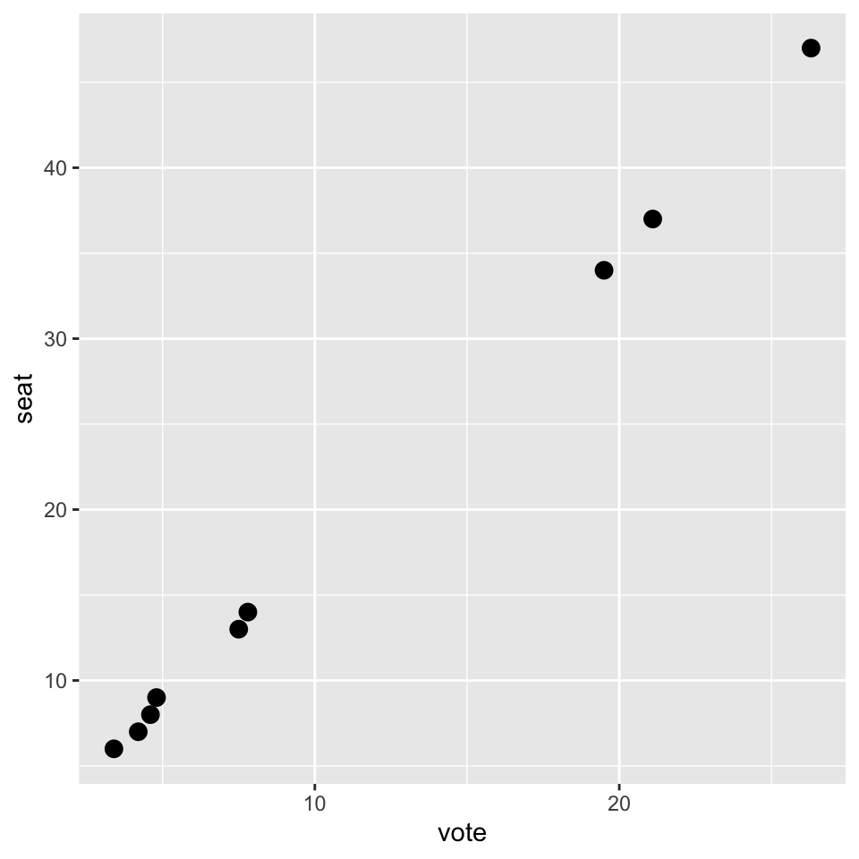
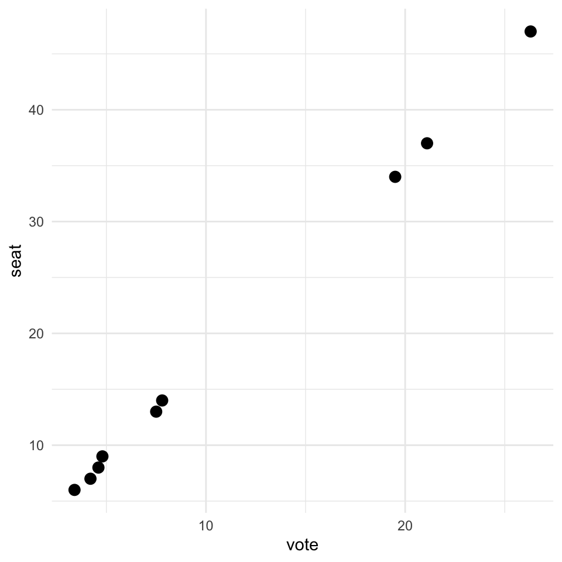
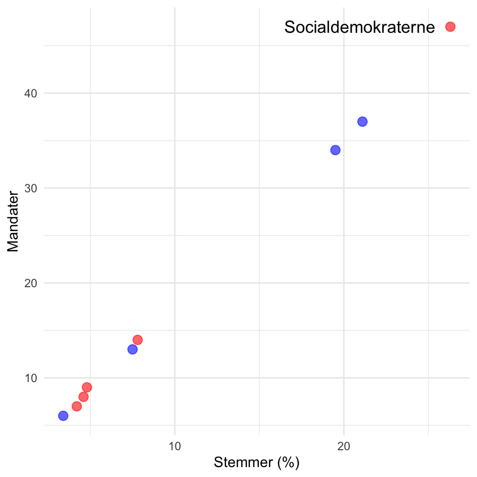
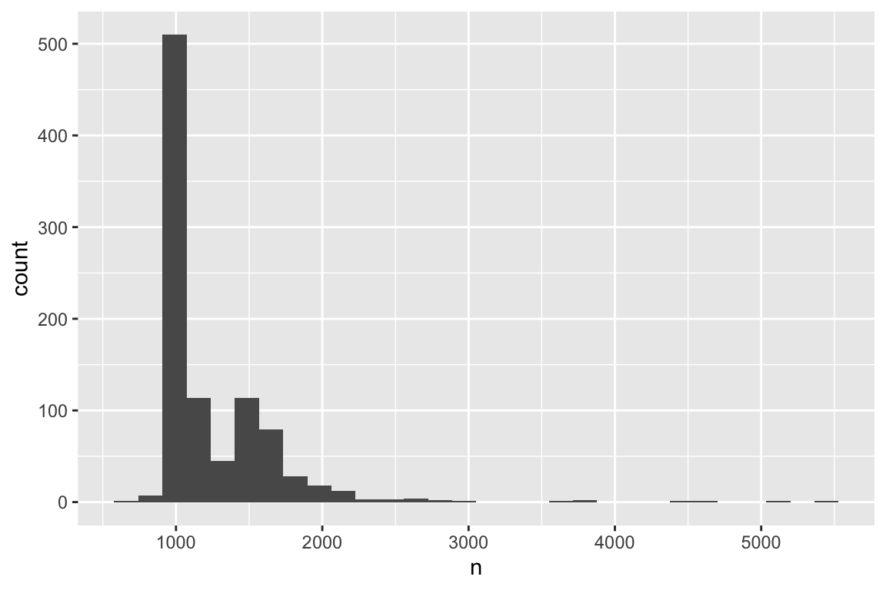

Kapitel 4 Visualisering
Der er mange måder at præsentere data på. Dette kapitel vil give en introduktion i, hvordan man kan visualisere sine data med R med fokus på pakken ggplot2. Der er tungtvejende grunde til at fokusere på at visualisere sine data, og i samfundsvidenskaberne er der kommet fokus på vigtigheden af at præsentere sine resultater i figurer i stedet for tabeller Schwabish (2014).
Field, Miles, & Field (2012) har beskrevet det som følger: “Data analysis is a bit like Internet dating (actually it’s not, but bear with me): you can scan through the vital statistics and find a perfect match (good IQ, tall, physically fit, likes arty French films, etc.) and you’ll think you have found the perfect answer to your question. However, if you haven’t looked at a picture, then you don’t really know how to interpret this information […] Data analysis is much the same: inspect your data with a picture, see how it looks and only then think about interpreting the more vital statistics.” (side 117)
Et kendt eksempel på det nyttige i at visualisere sine data gives af Anscombe (1973). Tabel 4.1 viser udvalgte resultater fra fire forskellige bivariate regressionsmodeller. Som det kan ses, er resultaterne identiske for de fire modeller.
| Model 1 | Model 2 | Model 3 | Model 4 | |
|---|---|---|---|---|
| \(\beta_{0}\) (se) | 3,00 (1,12) | 3,00 (1,13) | 3,00 (1,13) | 3,00 (1,12) |
| \(\beta_{1}\) (se) | 0,50 (0,12) | 0,50 (0,12) | 0,50 (0,12) | 0,50 (0,12) |
| \(R^{2}\) | 0,63 | 0,63 | 0,63 | 0,63 |
| \(N\) | 11 | 11 | 11 | 11 |
Kigger vi omvendt på, hvordan forholdet er mellem den uafhængige og afhængige variabel i de fire modeller, som illustreret i Figur 4.1, ser vi, at der er nævneværdige forskelle på de forskellige modeller, som ikke kommer til syne ved at kigge på nogle af de estimater, vi som regel er mest interesserede i, når vi arbejder med regressionsanalyser11.
Figure 4.1: Anscombes kvadrant
Ovenstående figur er lavet med R uden brug af nogle pakker, og dette fungerer fint og kan fungere ganske godt i de fleste tilfælde. Det er dog ofte yderst besværligt (altså tidskrævende) at lave pæne figurer på denne måde, og det script man ligeledes bygger op kan være svært for andre at læse, hvis man laver mere komplicerede figurer. Heldigvis er der en fantastisk pakke til R kaldet ggplot2 (H. Wickham, 2009), der gør det nemt at lave pænere figurer i R. Det er dog vigtigt at nævne, at ggplot2 ikke nødvendigvis er bedre end så mange andre pakker til at lave figurer, hvorfor det delvist handler om ens personlige præference. Ligeledes er der også funktioner i ggplot2, som det vil blive anbefalet ikke at bruge, herunder især funktionen qplot(), der står for quick plot, men som er ganske overflødig. ggplot2 bruges dog af flere og flere, hvorfor der også er mange gode ressourcer, der gør det nemt at lave pæne figurer.
4.1 Introducerende eksempel med ggplot2
I nærværende kapitel vil vi først kigge på et simpelt eksempel, der viser, hvordan man kan lave figurer med ggplot2 i R12. Til dette formål vil vi bruge datasættet ft2015.csv, som vi genererede i forrige kapitel13. Vi indlæser datasættet med funktionen read.csv().
pol <- read.csv("data/ft2015.csv")Hvis vi gerne vil vise relationen mellem hvor mange stemmer et parti har fået ved folketingsvalget og dets mandater i Folketinget, kan vi bruge funktionen plot() i R, der er en del af basispakken og dermed ikke kræver at en pakke indlæses.
plot(pol$vote, pol$seat)Et lignende plot kan vi lave med ggplot2, hvorfor vi først åbner pakken i R med library().
library("ggplot2")Til at lave et plot a la ovenstående med ggplot2 bruger vi funktionen ggplot(). Med ggplot() specificerer vi først hvilken dataramme, vi ønsker at anvende, samt hvilke variable i datarammen, der skal visualiseres (bemærk at ggplot() altid tager udgangspunkt i en dataramme). Det er med andre ord her, at vi angiver, hvilke variable der skal visualiseres samt deres rolle (evt. om variablen skal være på x-aksen eller y-aksen). Hvis vi eksempelvis har en dataramme med en variabel1 og variabel2, kan specifikationen se ud som følger:
ggplot(dataramme, aes(x=variabel1, y=variabel2))Her har vi således angivet, at vi er interesseret i variabel1 og variabel2, samt at førstnævnte er en x-akse variabel og sidstnævnte er en y-akse variabel. Vi har endnu ikke specificeret, hvilken type figur, vi ønsker at lave. Dette kan vi tilføje ved først at lave et + tegn, og så angive, hvilken figur vi ønsker at lave (i dette tilfælde et punktdiagram):
ggplot(dataramme, aes(x=variabel1, y=variabel2)) +
geom_point()Dette er grundideen med ggplot2. Først angiver vi, hvilke data vi er interesseret i at arbejde med, og så tilføjer vi ekstra specifikationer efter forgodtbefindende. Vi kan således tilføje information om, hvad der skal stå på akserne, hvor store punkterne skal være og så videre. En af fordelene ved denne tilgang er, at du først kan lave noget meget simpelt, og så derefter redigere i dette, til du til sidst opnår det ønskede resultat. Dette er uanset om du vælger at lave et søjlediagram, en punktdiagram eller noget helt tredje.
Dette kan virke uoverskueligt, men der er en mening med galskaben (en mening der kun bliver mere klar, jo mere man arbejder med det). De to g’er (altså gg) i ggplot2 står for grammar of graphics, og det er hele filosofien bag, altså at der skal være en sætningsstruktur til de figurer, man laver. Med andre ord består vores figur af forskellige komponenter. Har vi først lavet én figur, kan vi bygge videre på denne, eksempelvis ved at tilføje linjer og ændre farvetema, tekst med videre.
Vi kan således bruge ggplot2 til at lave en figur som ovenfor. Først specificerer vi, at vi er interesseret i at bruge datarammen pol, hvor x-aksen skal være vote og y-aksen seat. Dernæst siger vi at det skal være punkter (geom_point), vi gerne vil have visualiseret.
ggplot(pol, aes(x=vote, y=seat)) +
geom_point(size=3)
Dette er dog ikke nødvendigvis vores færdige figur. Tværtimod kan vi som nævnt tilføje flere komponenter. Lad os begyndte med blot at ændre temaet, så vi får et mere minimalistisk look. Dette gøres med tilføjelsen theme_minimal(). Bemærk desuden at de forskellige komponenter adskilles med +, men at det ikke er et krav, at de er på en ny linje.
ggplot(pol, aes(x=vote, y=seat)) +
geom_point(size=3) +
theme_minimal()
Dette er blot for at vise logikken bag ggplot2. Det kan virke kompliceret, men undlad at give op. Jo flere figurer du laver, gerne helt fra bunden, desto nemmere bliver det med tiden. Husk desuden også, at Google er en fantastisk ressource i denne sammenhæng, og hvis du søger efter ggplot2 og det du gerne vil lave, vil der i de fleste tilfælde komme resultater op, der vil hjælpe dig. Der er som sagt ingen grænse for, hvad man kan bygge på og ændre i, og i nedenstående kan det ses, at der er tilføjet en række ekstra linjer, der hver især tjener et formål i forhold til figuren.
ggplot(pol, aes(x=vote, y=seat)) +
scale_colour_manual(values=c("red", "blue")) +
geom_point(aes(col=as.factor(rw)), alpha=0.6, size=3) +
theme_minimal() + theme(legend.position="none") +
ylab("Mandater") +
xlab("Stemmer (%)") +
geom_text(aes(label=ifelse(party == "Socialdemokraterne",
"Socialdemokraterne",""),
hjust=1.1, vjust=0.5), size=4.5)
Ovenstående plot illustrerer blot den måde hvorpå ggplot2 fungerer. I nærværende tilfælde ville det ikke være nødvendigt at visualisere forholdet mellem stemmer og mandater, da det er begrænset hvor meget anden information der kommer ud af figuren, end ved blot at formidle korrelationen.
Det bedste råd der kan gives i forhold til brugen af ggplot2 pakken er, at lære det grundlæggende (altså hvordan man laver et histogram og andre figurer) og derfra så gradvist lære at bygge ovenpå (eksempelvis gennem Google), når der er problemer eller bestemte ønsker.
4.2 Specifikationer med ggplot2
I dette afsnit introduceres vigtig terminologi, og mere specifikt hvordan ggplot2 fungerer med geometriske objekter og æstetiske tilføjelser. Alle plots lavet med ggplot2 laves med funktionen ggplot(). I denne funktion angives det først, som beskrevet i forrige afsnit, hvilken dataramme, man anvender, hvorefter det angives hvilke variable, man er interesseret i. Ønsker man blot at vise en distribution af én variabel, er det selvsagt tilstrækkeligt blot at angive én variabel. De variable der skal visualiseres skal være en del af en dataramme.
Der er et utal af muligheder med ggplot2, og således også flere ting, der kan specificeres. Alt efter hvilken type figur, vi ønsker at lave, skal vi vælge en bestemt geom, der er et geometrisk objekt. Det er denne specifikation, der fortæller, om vi er interesseret i et histogram, et punktdiagram eller noget helt tredje.
Tabel 4.2 viser udvalgte geometriske objekter, der ofte anvendes. Foruden objektnavn er der angivet et link til hvert objekt, hvor man kan læse mere om de respektive objekter og se illustrative eksempler på, hvordan de fungerer.
| Navn | Funktion | Side: Cookbook for R |
|---|---|---|
| Bar plot | geom_bar() |
Bar and line graphs |
| Boxplot | geom_boxplot() |
Plotting distributions |
| Densitetsplot | geom_density() |
Plotting distributions |
| Histogram | geom_histogram() |
Plotting distributions |
| Punktdiagram | geom_point() |
Scatterplots |
Det næste vi skal have styr på, er det æstetiske. Her anvendes aes() (forkortelse af aesthetic). Her specificeres det, hvilke variable vi skal visualisere m.v. Det er således også her det angives, hvis observationer skal have forskellige farver.
Som det kunne ses ovenfor, er der et standardtema, som ggplot2 anvender. Der er tale om en karakteristik grå baggrund, som ikke er decideret grim, men nemt kan ændres, hvis man vil have noget mere simpelt (eller bare noget andet).
Tabel 4.3 viser en rækkke udvalgte temaer der er at finde i hhv. ggplot2
og ggthemes. Det er kun udvalgte temaer, og ggthemes har eksempelvis også theme_stata(), og det siger sig selv, at dette tema aldrig skal anvendes.
| Funktion | Pakke | Beskrivelse |
|---|---|---|
| theme_bw() | ggplot2 |
Mørke elementer på hvid baggrund |
| theme_minimal() | ggplot2 |
Minimalistisk tema |
| theme_classic() | ggplot2 |
Tema uden gitterlinjer |
| theme_base() | ggthemes |
Kopi af base tema i R |
| theme_economist() | ggthemes |
The Economist tema |
| theme_fivethirtyeight() | ggthemes |
FiveThirtyEight tema |
| theme_tufte() | ggthemes |
Tufte (1983) tema |
Figur 4.2 viser hvordan de forskellige themes ser ud. Rækkefølgen er: Standard, theme_bw(), theme_minimal(), theme_classic(), theme_base(), theme_economist(), theme_fivethirtyeight(), theme_tufte().
Figure 4.2: Otte forskellige temaer
Der findes flere ressourcer online, der beskæftiger sig med temaer til ggplot2, og foruden ovenstående kan ggthemr og ggplot2 extensions anbefales.
4.3 Eksempel: Venstre i meningsmålingerne i 2015
I dette afsnit gives flere eksempler på, hvordan man kan bygge figurer op. Idéen er ikke, at du efter at have læst dette afsnit kan - eller skal kunne - lave lignende figurer, men at du har en klar idé om hvordan figurer laves og kan finde inspiration i nedenstående, når du laver dine egne figurer.
Til dette vil vi bruge datasættet polls.csv, der indeholder data på en lang række meningsmålinger, der viser opbakningen til de partier, der enten er i Folketinget eller arbejder på at komme det. Vi bruger igen kommandoen read.csv() til at indlæse vores datasæt. Vi gemmer det i objektet polls:
polls <- read.csv("data/polls.csv")Først skal vi have et overblik over datasætte. Til at gøre dette bruger vi summary():
summary(polls) id pollingfirm year month
Min. : 1 Length:1013 Min. :2010 Min. : 1.000
1st Qu.: 254 Class :character 1st Qu.:2011 1st Qu.: 4.000
Median : 507 Mode :character Median :2013 Median : 6.000
Mean : 507 Mean :2013 Mean : 6.563
3rd Qu.: 760 3rd Qu.:2015 3rd Qu.: 9.000
Max. :1013 Max. :2016 Max. :12.000
day party_a party_b party_c
Min. : 1.00 Min. :14.40 Min. : 3.300 Min. : 2.100
1st Qu.: 8.00 1st Qu.:20.30 1st Qu.: 5.500 1st Qu.: 3.500
Median :13.00 Median :24.20 Median : 7.600 Median : 4.200
Mean :15.13 Mean :23.29 Mean : 7.277 Mean : 4.509
3rd Qu.:23.00 3rd Qu.:26.10 3rd Qu.: 8.725 3rd Qu.: 5.225
Max. :31.00 Max. :31.50 Max. :11.700 Max. :12.700
NA's :1 NA's :1 NA's :1
party_d party_f party_i party_k
Min. :1.000 Min. : 2.400 Min. :0.200 Min. :0.0000
1st Qu.:1.800 1st Qu.: 4.775 1st Qu.:4.700 1st Qu.:0.5000
Median :2.700 Median : 6.100 Median :5.500 Median :0.7000
Mean :2.792 Mean : 7.256 Mean :5.682 Mean :0.7072
3rd Qu.:3.600 3rd Qu.: 7.900 3rd Qu.:6.900 3rd Qu.:0.9000
Max. :5.600 Max. :19.400 Max. :9.500 Max. :1.5000
NA's :988 NA's :1 NA's :1 NA's :624
party_o party_v party_oe party_aa
Min. : 9.90 Min. :14.50 Min. : 2.100 Min. :0.900
1st Qu.:13.40 1st Qu.:20.60 1st Qu.: 7.200 1st Qu.:3.600
Median :17.10 Median :23.50 Median : 8.600 Median :4.800
Mean :16.73 Mean :24.51 Mean : 8.349 Mean :4.709
3rd Qu.:19.60 3rd Qu.:28.40 3rd Qu.: 9.800 3rd Qu.:6.000
Max. :24.50 Max. :36.40 Max. :14.900 Max. :9.300
NA's :1 NA's :1 NA's :1 NA's :689
n source
Min. : 717 Length:1013
1st Qu.:1016 Class :character
Median :1050 Mode :character
Mean :1259
3rd Qu.:1500
Max. :5503
NA's :65 Som det kan ses har vi en lang række af variable i vores dataramme polls. id, der giver hver observation et id. pollingfirm, der angiver hvilket analyseinstitut, der har foretaget meningsmålingen. year, month og day angiver henholdsvis årstal, måned og dag for, hvornår dataindsamlingen for meningsmålingen blev fuldført. I vores datasæt har vi, som det kan ses, observationer i perioden fra 2010 til 2016. De næste variable angiver opbakningen til de forskellige partier, hvor de begynder med præfikset party_ og dernæst partibogstavet. party_v er således partiet Venstres opbakning i meningsmålingen. Sidst har vi variablen n, der angiver hvor mange der er blevet spurgt, og til sidst source, der angiver, hvor informationerne er fra.
Vi kan begynde med at lave et histogram over, hvor mange respondenter der normalt bliver spurgt i meningsmålingerne.
ggplot(polls, aes(x=n)) +
geom_histogram() 
Som vi kan se spørger de fleste meningsmålinger omkring 1000 personer. Dette harmonerer fint med vores deskriptive statistik i ovenstående, hvor vi kunne se, at medianen var 1050.
Som det næste kan vi se på, hvilke institutter der har gennemført meningsmålingerne i vores datasæt. Til dette bruger vi geom_bar() i stedet for geom_histogram, og så tilføjer vi theme_minimal(), blot for at gøre figuren lidt pænere:
ggplot(polls, aes(x=pollingfirm)) +
geom_bar() +
theme_minimal()
Som det kan ses gennemfører Voxmeter flest meningsmålinger i denne periode (hvilket skyldes, at Voxmeter normalt foretager en meningsmåling om ugen). Vi kan også se på, hvordan partierne i hele perioden ligger hos de respektive analyseinstitutter. I nedenstående laver vi et boxplot med information om, hvordan partiet Venstre normalt ligger.
ggplot(polls, aes(x=pollingfirm, y=party_v)) +
geom_boxplot() +
theme_minimal()
Det kan ses, at især Rambøll har Venstre højere oppe. Det skyldes dog ikke, at Rambøll overvurderer Venstre, men at meningsmålingerne fra Rambøll er fra tidligt i perioden (hvor Venstre lå højere i meningsmålingerne). Derfor er vi også interesseret i at kigge på Venstres opbakning over tid, hvor vi i nærværende tilfælde indskrænker os til 2015. For at gøre dette laver vi først en ny variabel, date, der samler information fra year, month og day og så indskrænker datasættet i objektet polls.2015 til kun at have meningsmålingerne fra 2015.
polls$date <- format(as.Date(c(paste(polls$year,
polls$month,
polls$day,
sep="-")), by = "days"))
polls.2015 <- polls[polls$date > as.Date("2015-01-01") &
polls$date < as.Date("2015-12-31"),]Dette kan vi illustrere med nedenstående kode. Bemærk at vi her også angiver, at date er en datovariabel (med as.Date()). Ligeledes tilføjer vi nogle andre specifikationer, der gør figuren lidt pænere og informativ.
ggplot(polls.2015, aes(x=as.Date(date), y=party_v)) +
geom_point(colour="blue", alpha=.3) +
ggtitle("Venstres opbakning i meningsmålingerne, 2015") +
ylab("Stemmer (%)") +
scale_x_date("", date_labels = c("%b")) +
theme_minimal()Figuren viser alle meningsmålingerne i 2015. Hvis vi gerne vil vise dem for de enkelte analyseinstitutter, kan vi bruge funktionen facet_wrap() og angive, at vi skal have en figur for hver kategori i pollingfirm og vil have dem vist i to kolonner:
ggplot(polls.2015, aes(x=as.Date(date), y=party_v)) +
geom_point(colour="blue", alpha=.3) +
ggtitle("Venstres opbakning i meningsmålingerne, 2015") +
ylab("Stemmer (%)") +
scale_x_date("", date_labels = c("%b")) +
theme_minimal() +
facet_wrap( ~ pollingfirm, ncol=2)4.4 Afsluttende bemærkninger
Nærværende kapitel har givet en introduktion til nogle af de grundlæggende elementer i, hvordan man visualiserer datarammer med ggplot2-pakken i R. Når du har lavet en figur, er det ofte også nødvendigt at eksportere den, altså få den gemt, så du kan inkludere den i dit arbejde. Til at gemme et plot bruger vi kommandoen ggsave():
ggsave("filnavn.png")Figuren vil blive gemt i dit working directory. Filtypen .png kan erstattes med andre formater, du skulle have interesse i. Hvis du har gemt figuren i et objekt, eksempelvis objektet plot.1, kan du også angive dette før selve angivelsen af filen:
ggsave(plot.1, "filnavn.png")Når du har gemt din figur, vil du i mange tilfælde se, at du ikke er helt tilfreds med højden og bredden på figuren. Dette kan du ændre ved hjælp af specifikationerne width og height:
ggsave(plot.1, "filnavn.png", width = 4, height = 4)Der er to pointer, der er vigtige at afslutte nærværende kapitel med. For det første, overordnet set, er det vigtigt at huske på, at man i en visualisering ikke oversælger sine data (eller modelestimater). Tufte (1983) opererer med begrebet løgnfaktor, der er effektstørrelsen i ens grafik divideret med effektstørrelsen i ens data. Der skal i ens præsentation gerne være en løgnfaktor på 1, altså en retmæssig præsentation af, hvad ens data rent faktisk viser.
For det andet har hensigten med dette kapitel været at give et indblik i, hvad man kan med ggplot2. Kapitlet er på ingen måde udtømmende, og der findes talrige guides på nettet, der mindst lige så godt som dette kapitel, klæder dig på til at visualisere data med ggplot2 i R. Disse inkluderer blandt andet:
- Introduction to R Graphics with ggplot2
- Building a ggplot2 step by step
- An Introduction on How to Make Beautiful Charts With R and ggplot2
- Scatter plots (ggplot2 way)
Som den sidste ressource kan officielle dokumentation anbefales, der har en oversigt over alle geoms, statistics, scales, aesthetics osv.: docs.ggplot2.org/current/
For et andet godt eksempel, se indlægget What data patterns can lie behind a correlation coefficient?.↩︎
De datasæt vi arbejder med i løbet af bogen kan ligeledes findes på GitHub: github.com/erikgahner/Rguide/tree/master/data↩︎